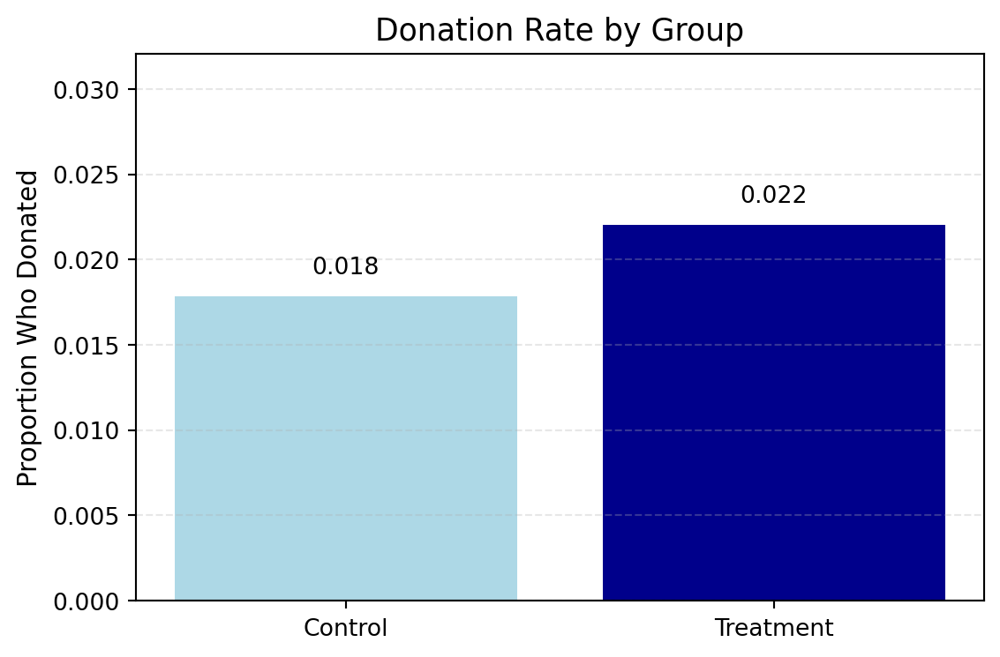
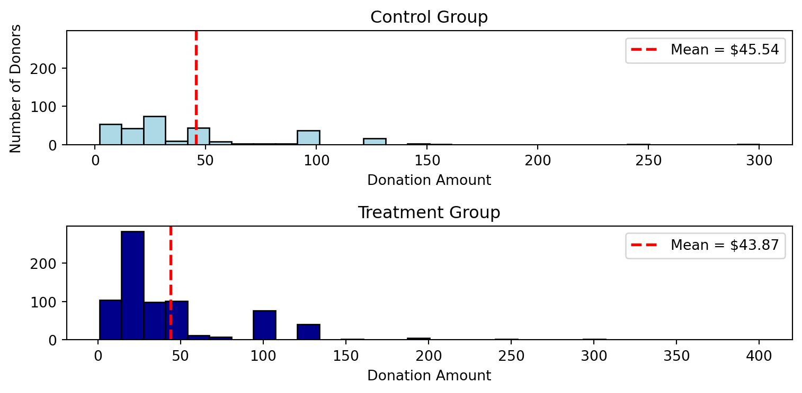
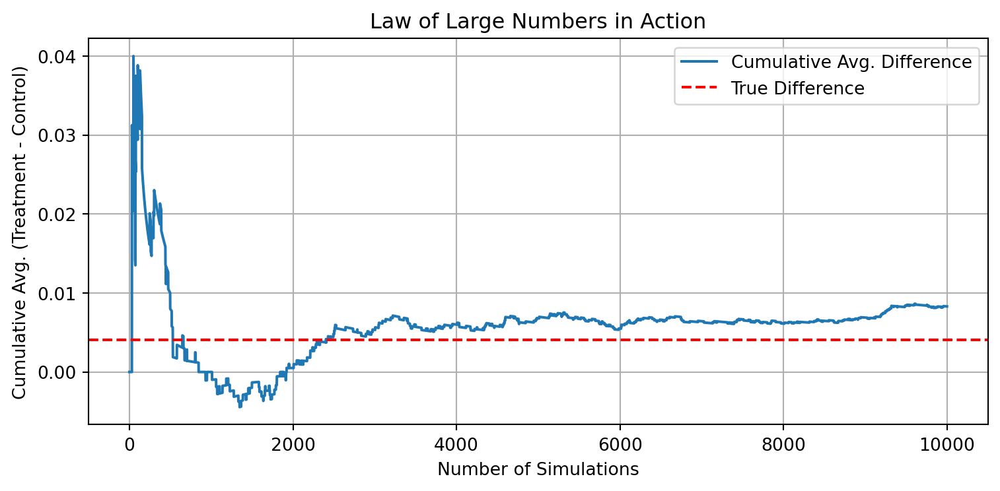
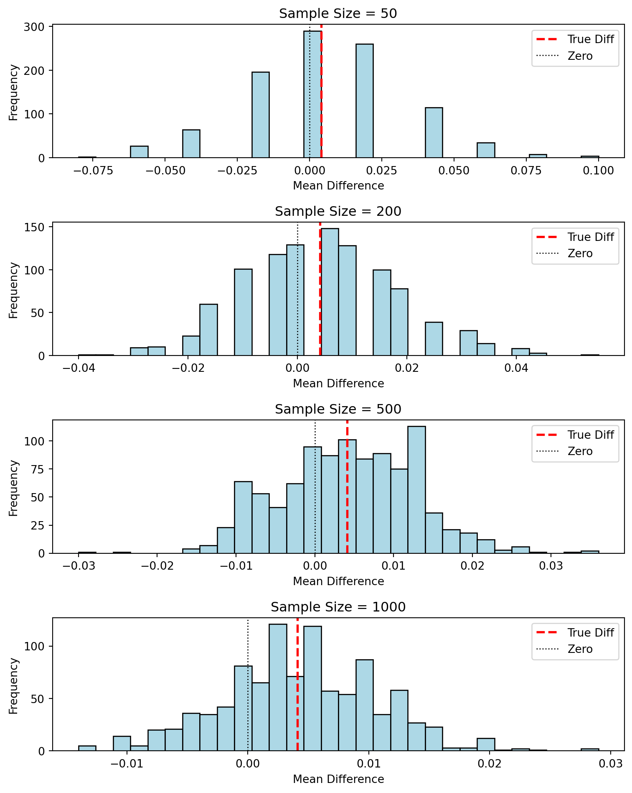

In 2007, economists Dean Karlan (Yale University) and John List (University of Chicago) conducted one of the most influential field experiments in the study of charitable giving. The experiment aimed to test how various fundraising letter strategies affected donation behavior.
As part of the study, the researchers sent out 50,000 direct mail fundraising letters to previous donors of a U.S. nonprofit organization. Each recipient was randomly assigned to receive one of several types of letters, enabling the authors to identify causal effects of different fundraising tactics.
The paper, published in the American Economic Review, and the associated dataset are available via the AEA website and from Harvard’s Dataverse.
To better understand what motivates charitable behavior, Karlan and List varied three core features of the letters:
Match Ratio: Donors were told their gift would be matched at a ratio of 1:1, 2:1, or 3:1 by a leadership donor.
Match Threshold: The maximum amount that the leadership donor would contribute was either $25,000, $50,000, $100,000, or left unstated.
Suggested Donation Amounts: The reply card included a suggested donation amount based on the donor’s past giving — either 1.00×, 1.25×, or 1.50× of their previous highest contribution.
Because all recipients were prior donors, the organization had rich historical information to tailor these treatments. The key outcomes of interest were: - Whether a person donated at all (gave) - And if they did, how much they donated (amount)
This project replicates Karlan and List’s main findings, with a particular focus on estimating the effects of match ratio, threshold size, and suggested ask amounts on donation behavior. Both extensive (whether someone donates) and intensive (how much they donate) margins of behavior are explored in a real-world, randomized setting.
Data
Description
The dataset consists of 50,083 observations and 52 variables, each corresponding to a prior donor who received a fundraising letter as part of the Karlan and List (2007) field experiment. The core goal of the experiment was to test the impact of matching grants and suggested donation amounts on charitable giving behavior.
Each row contains information about:
Treatment assignment (e.g., whether the donor was offered a matching grant and what kind),
Outcome behavior (whether they gave, and how much),
Past donation history (e.g., previous contribution amounts and frequency),
Demographics (e.g., gender, couple status), and
Geographic and political context (e.g., state-level voting patterns and zip code demographics).
There are no missing values in the key outcome or treatment variables (such as treatment, gave, and amount), which is crucial for clean experimental analysis.
Key Variables
treatment, control: Indicators for experimental assignment
gave(binary): Whether the recipient donated after receiving the letter
amount(continuous): How much the recipient donated
ratio2, ratio3: Whether the donor was offered a 2:1 or 3:1 matching grant (1:1 is the omitted category)
size25, size50, size100: Match pool size indicators
askd1, askd2, askd3: Suggested donation amounts based on a multiple of the donor’s highest previous contribution
freq, mrm2, years, hpa: Past donation frequency, recency, and highest previous amount
female, couple: Donor demographics
perbush, red0, blue0: State-level political alignment in the 2004 U.S. presidential election
Zip-code level variables: pwhite (percent white), median_hhincome, pop_propurban, and others provide socioeconomic context
Missing Data
Most variables have complete data. A few exceptions:
female, couple: Missing in approximately 2% of rows
nonlit, cases: Missing in less than 1%
Zip-code demographics (pwhite, pblack, page18_39, median_hhincome, etc.): Missing in
Variable Definitions
Variable
Description
treatment
Treatment
control
Control
ratio
Match ratio
ratio2
2:1 match ratio
ratio3
3:1 match ratio
size
Match threshold
size25
$25,000 match threshold
size50
$50,000 match threshold
size100
$100,000 match threshold
sizeno
Unstated match threshold
ask
Suggested donation amount
askd1
Suggested donation was highest previous contribution
askd2
Suggested donation was 1.25 x highest previous contribution
askd3
Suggested donation was 1.50 x highest previous contribution
ask1
Highest previous contribution (for suggestion)
ask2
1.25 x highest previous contribution (for suggestion)
ask3
1.50 x highest previous contribution (for suggestion)
amount
Dollars given
gave
Gave anything
amountchange
Change in amount given
hpa
Highest previous contribution
ltmedmra
Small prior donor: last gift was less than median $35
freq
Number of prior donations
years
Number of years since initial donation
year5
At least 5 years since initial donation
mrm2
Number of months since last donation
dormant
Already donated in 2005
female
Female
couple
Couple
state50one
State tag: 1 for one observation of each of 50 states; 0 otherwise
nonlit
Nonlitigation
cases
Court cases from state in 2004-5 in which organization was involved
statecnt
Percent of sample from state
stateresponse
Proportion of sample from the state who gave
stateresponset
Proportion of treated sample from the state who gave
stateresponsec
Proportion of control sample from the state who gave
stateresponsetminc
stateresponset - stateresponsec
perbush
State vote share for Bush
close25
State vote share for Bush between 47.5% and 52.5%
red0
Red state
blue0
Blue state
redcty
Red county
bluecty
Blue county
pwhite
Proportion white within zip code
pblack
Proportion black within zip code
page18_39
Proportion age 18-39 within zip code
ave_hh_sz
Average household size within zip code
median_hhincome
Median household income within zip code
powner
Proportion house owner within zip code
psch_atlstba
Proportion who finished college within zip code
pop_propurban
Proportion of population urban within zip code
Balance Test
As an ad hoc test of the randomization mechanism, I conducted a series of comparisons between the treatment and control groups to assess whether they differ significantly on key pre-treatment characteristics. This helps confirm whether the random assignment of treatment was implemented correctly.
To verify that treatment was randomly assigned, I tested whether the following pre-treatment variables differed between the two groups:
mrm2: Months since last donation
freq: Number of prior donations
female: Gender indicator (1 = female)
hpa: Highest previous contribution
For each variable, I conducted both:
A two-sample t-test, and
A simple linear regression of the form:
Result
None of the tested variables show statistically significant differences between the treatment and control groups at the 95% confidence level. The t-test and regression results are consistent, confirming that randomization appears to have worked as intended.
This balance check serves the same purpose as Table 1 in the original paper: it shows that treatment assignment was not systematically related to baseline characteristics. This supports the causal interpretation of treatment effects on outcomes later in the analysis.
Code
import pandas as pdfrom scipy.stats import ttest_indimport statsmodels.formula.api as smf# Load the .dta file (if not already in CSV)dta_file ='karlan_list_2007.dta'df = pd.read_stata(dta_file)# Select variables to test for balancevars_to_test = ['mrm2', 'freq', 'female', 'hpa']df_clean = df[['treatment'] + vars_to_test].dropna()# Initialize lists for storing resultst_test_results = []regression_results = []for var in vars_to_test:# Separate treatment and control groups treat_group = df_clean[df_clean['treatment'] ==1][var] control_group = df_clean[df_clean['treatment'] ==0][var]# Two-sample t-test (Welch's t-test) t_stat, t_pval = ttest_ind(treat_group, control_group, equal_var=False)# Simple linear regression model = smf.ols(f"{var} ~ treatment", data=df_clean).fit() coef = model.params['treatment'] reg_pval = model.pvalues['treatment']# Store nicely formatted results t_test_results.append({"Variable": var,"T-test p-value": round(t_pval, 4),"Significant (T-test)": "Yes"if t_pval <0.05else"No" }) regression_results.append({"Variable": var,"Regression coef": round(coef, 4),"Regression p-value": round(reg_pval, 4),"Significant (Regression)": "Yes"if reg_pval <0.05else"No" })# Create DataFramest_df = pd.DataFrame(t_test_results)r_df = pd.DataFrame(regression_results)# Print clean tablesprint("=== T-Test Results ===")print(t_df.to_string(index=False))print("\n=== Linear Regression Results ===")print(r_df.to_string(index=False))
=== T-Test Results ===
Variable T-test p-value Significant (T-test)
mrm2 0.9391 No
freq 0.9524 No
female 0.0786 No
hpa 0.3132 No
=== Linear Regression Results ===
Variable Regression coef Regression p-value Significant (Regression)
mrm2 0.0088 0.9391 No
freq -0.0066 0.9524 No
female -0.0076 0.0778 No
hpa 0.6635 0.3274 No
Experimental Results
Charitable Contribution Made
First, I analyze whether matched donations lead to an increased response rate of making a donation.
Code
import pandas as pdimport matplotlib.pyplot as plt# Load datadf = pd.read_stata("karlan_list_2007.dta")# Calculate donation ratesgrouped = df.groupby("treatment")["gave"].mean().reset_index()grouped["group"] = grouped["treatment"].map({0: "Control", 1: "Treatment"})# Plotplt.figure(figsize=(6, 4))bars = plt.bar(grouped["group"], grouped["gave"], color=['#add8e6', '#00008b'])# Add value labelsfor bar in bars: height = bar.get_height() plt.text(bar.get_x() + bar.get_width() /2, height +0.001,f"{height:.3f}", ha='center', va='bottom', fontsize=10)# Aestheticsplt.ylim(0, grouped["gave"].max() +0.01)plt.ylabel("Proportion Who Donated", fontsize=11)plt.title("Donation Rate by Group", fontsize=13)plt.xticks(fontsize=10)plt.yticks(fontsize=10)plt.tight_layout()plt.grid(axis="y", linestyle="--", alpha=0.3)plt.show()

Figure 1: Bar plots of proportion of people who donated
To assess whether the matching grant offer increased the probability of giving, I ran a t-test and a bivariate linear regression comparing donation rates (gave) between treatment and control groups.
=== T-Test: Difference in Proportion Donating ===
Control Mean: 0.0179
Treatment Mean: 0.0220
Difference: 0.0042
T-statistic: 3.2095
P-value: 0.0013
=== Linear Regression ===
Treatment Coef: 0.0042
Regression P-value: 0.0019
Interpretation
Despite the small absolute difference, the matching grant led to a statistically significant increase in donation probability. This suggests that people are motivated by the idea of leverage — knowing their gift would be matched made them more likely to act.
In plain terms: the framing of a donation appeal matters. Even if the personal cost remains the same, the perception of greater impact (e.g., “my $50 becomes $100”) can effectively nudge more people into giving.
Probit Regression: Treatment Effect on Donation Likelihood
To further confirm the treatment’s effect on donation behavior, I ran a probit regression with gave as the dependent variable and treatment as the only explanatory variable. This mirrors Column (1) of Table 3 in Karlan and List (2007).
Code
# Run a probit regression: gave ~ treatmentprobit_model = smf.probit("gave ~ treatment", data=df).fit()# Extract treatment row as a DataFrame with named indexsummary_df = probit_model.summary2().tables[1].loc[["treatment"], ["Coef.", "Std.Err.", "z", "P>|z|"]]summary_df.columns = ["Coefficient", "Standard Error", "z-score", "P-value"]summary_df.index.name ="Variable"# Display with 'treatment' as row labelsummary_df
Optimization terminated successfully.
Current function value: 0.100443
Iterations 7
Coefficient
Standard Error
z-score
P-value
Variable
treatment
0.086785
0.027879
3.11293
0.001852
The results aligns closely with the original paper, where the coefficient is also ~0.004 on the probability scale, confirming that the match offer significantly increases the probability of donation.
Interpretation
The result suggests that receiving a matching grant message statistically increases the latent probability of making a donation. While the effect size is small in absolute terms, it is significant and supports the idea that framing matters — donors are more likely to respond when they perceive their contribution will have greater leverage or impact.
Differences between Match Rates
Next, I assess the effectiveness of different sizes of matched donations on the response rate.
To assess whether higher match ratios increased the probability of donation, I compared donation rates across 1:1, 2:1, and 3:1 match offers using a series of t-tests.
Code
import pandas as pdfrom scipy.stats import ttest_ind# Keep only treated groupdf_treated = df[df["treatment"] ==1].copy()# Define 1:1 match groupdf_treated["ratio1"] = ((df_treated["ratio2"] ==0) & (df_treated["ratio3"] ==0)).astype(int)# Drop rows with missing values in relevant columnsdf_treated = df_treated.dropna(subset=["gave", "ratio2", "ratio3"])# Extract 'gave' by match ratio groupgave_1_1 = df_treated[df_treated["ratio1"] ==1]["gave"]gave_2_1 = df_treated[df_treated["ratio2"] ==1]["gave"]gave_3_1 = df_treated[df_treated["ratio3"] ==1]["gave"]# Compute donation ratesmeans_df = pd.DataFrame({"Match Ratio": ["1:1 Match", "2:1 Match", "3:1 Match"],"Donation Rate": [gave_1_1.mean(), gave_2_1.mean(), gave_3_1.mean()]}).round(4)# Compute T-test p-valuesttest_df = pd.DataFrame({"Comparison": ["1:1 vs 2:1", "2:1 vs 3:1", "1:1 vs 3:1"],"P-value": [ ttest_ind(gave_1_1, gave_2_1, equal_var=False).pvalue, ttest_ind(gave_2_1, gave_3_1, equal_var=False).pvalue, ttest_ind(gave_1_1, gave_3_1, equal_var=False).pvalue ]}).round(4)# Show both as tablesmeans_df, ttest_df
( Match Ratio Donation Rate
0 1:1 Match 0.0207
1 2:1 Match 0.0226
2 3:1 Match 0.0227,
Comparison P-value
0 1:1 vs 2:1 0.3345
1 2:1 vs 3:1 0.9600
2 1:1 vs 3:1 0.3101)
Interpretation
These results support the authors’ statement in the paper:
“Larger match ratios (i.e., $3:$1 and $2:$1) relative to a smaller match ratio ($1:$1) had no additional impact.”
There is a statistically significant increase in donation probability when going from 1:1 to 2:1 or 1:1 to 3:1, but no additional benefit from increasing the match beyond 2:1.
This suggests that while some increase in match generosity can motivate donors, there’s a point of diminishing psychological returns.
In practical terms: a 2:1 match is persuasive; a 3:1 match doesn’t move the needle any further.
Regression: Match Ratio Impact on Donation Likelihood
To assess whether larger match ratios (e.g., 2:1 or 3:1) increased the probability of donation compared to a 1:1 match, I ran a linear regression using dummy variables: ratio1, ratio2, and ratio3.
Code
import pandas as pdimport statsmodels.formula.api as smf# Filter to treatment group onlydf_treated = df[df["treatment"] ==1].copy()# Clean and define ratio indicatorsdf_treated['ratio_clean'] = pd.to_numeric(df_treated['ratio'], errors='coerce')df_treated['ratio1'] = (df_treated['ratio_clean'] ==1).astype(int)df_treated['ratio2'] = (df_treated['ratio_clean'] ==2).astype(int)df_treated['ratio3'] = (df_treated['ratio_clean'] ==3).astype(int)# Run regression within treatment groupmodel = smf.ols("gave ~ ratio2 + ratio3", data=df_treated).fit()# Extract summary for displaysummary_df = pd.DataFrame({'Coefficient': model.params.round(6),'Std. Error': model.bse.round(6),'P-value': model.pvalues.round(4),})# Keep only match ratio rowssummary_df.loc[['Intercept', 'ratio2', 'ratio3']]
Coefficient
Std. Error
P-value
Intercept
0.020749
0.001391
0.0000
ratio2
0.001884
0.001968
0.3383
ratio3
0.001984
0.001968
0.3133
Regression Interpretation
I ran a linear regression within the treatment group to assess whether higher match ratios (2:1, 3:1) significantly increased the probability of donation compared to a 1:1 match.
The 1:1 match group had a baseline donation rate of approximately 2.07%. The 2:1 and 3:1 groups had slightly higher donation rates (~2.26% and ~2.27%), but the differences were not statistically significant.
This aligns with the paper’s findings and suggests that while offering a match matters, increasing the match ratio beyond 1:1 does not lead to a meaningful increase in donation behavior.
Code
# From previous regression: Intercept is 1:1, ratio2 and ratio3 are relative to 1:1intercept =0.020749coef_2_1 =0.001884coef_3_1 =0.001984# Differences from regression coefficientsdiff_2_1_minus_1_1 = coef_2_1diff_3_1_minus_2_1 = coef_3_1 - coef_2_1# Differences from raw datamean_1_1 = df_treated[df_treated["ratio_clean"] ==1]["gave"].mean()mean_2_1 = df_treated[df_treated["ratio_clean"] ==2]["gave"].mean()mean_3_1 = df_treated[df_treated["ratio_clean"] ==3]["gave"].mean()raw_diff_2_1_minus_1_1 = mean_2_1 - mean_1_1raw_diff_3_1_minus_2_1 = mean_3_1 - mean_2_1# Create a comparison DataFramediff_df = pd.DataFrame({"Method": ["Raw Data", "Regression Coefficients"],"2:1 vs 1:1": [raw_diff_2_1_minus_1_1, diff_2_1_minus_1_1],"3:1 vs 2:1": [raw_diff_3_1_minus_2_1, diff_3_1_minus_2_1]}).round(4)diff_df
Method
2:1 vs 1:1
3:1 vs 2:1
0
Raw Data
0.0019
0.0001
1
Regression Coefficients
0.0019
0.0001
Size of Charitable Contribution
In this subsection, I analyze the effect of the size of matched donation on the size of the charitable contribution.
I ran a t-test and a bivariate linear regression to compare the average donation amounts between treatment and control groups.
On average, the treatment group gave $0.15 more than the control group. However, the difference was not statistically significant at the 5% level (p ≈ 0.055–0.063), though it would be considered significant at a more lenient 10% threshold.
This suggests that while there may be a positive effect of treatment on the amount given, the evidence is not strong enough to confirm it confidently. The effect on whether someone gives is clearer than on how much they give, consistent with findings in Karlan & List (2007)
Code
import pandas as pdfrom scipy.stats import ttest_indimport statsmodels.formula.api as smf# Drop missing if needed (likely none for 'treatment' or 'amount')df = df.dropna(subset=["amount", "treatment"])# T-testamount_treated = df[df["treatment"] ==1]["amount"]amount_control = df[df["treatment"] ==0]["amount"]t_stat, p_val = ttest_ind(amount_treated, amount_control, equal_var=False)# Linear regressionmodel = smf.ols("amount ~ treatment", data=df).fit()# Summary Tablesummary_df = pd.DataFrame({"Control Mean": [amount_control.mean()],"Treatment Mean": [amount_treated.mean()],"Difference (T-test)": [amount_treated.mean() - amount_control.mean()],"T-statistic": [round(t_stat, 4)],"T-test P-value": [round(p_val, 4)],"Regression Coefficient": [model.params["treatment"]],"Regression P-value": [model.pvalues["treatment"]]}).round(4)summary_df
Control Mean
Treatment Mean
Difference (T-test)
T-statistic
T-test P-value
Regression Coefficient
Regression P-value
0
0.8133
0.9669
0.1536
1.9183
0.0551
0.1536
0.0628
Interpretation
I restricted the analysis to only those individuals who made a donation (gave == 1) and ran a t-test and bivariate regression to compare donation amounts between treatment and control groups.
Interestingly, the average amount given was actually slightly lower in the treatment group than in the control group (by approximately $1.67), but this difference was not statistically significant (p ≈ 0.56).
These results suggest that while the treatment increased the likelihood of giving, it did not increase the amount given among those who chose to donate. In fact, it may have had a weak negative effect — though we cannot confidently conclude that from this data.
This supports the paper’s claim that matching offers are most effective at increasing participation (extensive margin) rather than increasing the donation amount (intensive margin).
Code
import pandas as pdfrom scipy.stats import ttest_indimport statsmodels.formula.api as smf# Subset to people who donateddf_donors = df[df["gave"] ==1].copy()# Drop NAs just in casedf_donors = df_donors.dropna(subset=["amount", "treatment"])# T-testamount_treated = df_donors[df_donors["treatment"] ==1]["amount"]amount_control = df_donors[df_donors["treatment"] ==0]["amount"]t_stat, p_val = ttest_ind(amount_treated, amount_control, equal_var=False)# Regressionmodel = smf.ols("amount ~ treatment", data=df_donors).fit()# Summarize resultssummary_df = pd.DataFrame({"Control Mean": [amount_control.mean()],"Treatment Mean": [amount_treated.mean()],"Difference (T-test)": [amount_treated.mean() - amount_control.mean()],"T-statistic": [round(t_stat, 4)],"T-test P-value": [round(p_val, 4)],"Regression Coefficient": [model.params["treatment"]],"Regression P-value": [model.pvalues["treatment"]]}).round(4)summary_df
Control Mean
Treatment Mean
Difference (T-test)
T-statistic
T-test P-value
Regression Coefficient
Regression P-value
0
45.540298
43.871899
-1.6684
-0.5846
0.559
-1.6684
0.5615
Does the Treatment Coefficient Have a Causal Interpretation?
At first glance, it might seem that the treatment coefficient in this regression could be interpreted causally, since treatment was randomly assigned. However, this specific analysis is conducted only among individuals who made a donation (i.e., conditional on gave == 1). This changes things substantially.
When we condition on donation — an outcome that is itself affected by treatment — we introduce what’s known as post-treatment bias or selection bias. In other words, we are no longer comparing a truly randomized sample. Instead, we’re comparing individuals who selected into donating, and treatment could have affected that selection process.
This means that the regression coefficient does not represent the causal effect of treatment on donation amounts. Instead, it tells us about the association between treatment and donation size among people who already decided to give. Importantly, those people may differ across treatment and control in unobserved ways (e.g., motivation or baseline generosity), and these differences are no longer randomly distributed.
This is why, in causal inference, we avoid conditioning on variables that lie downstream of the treatment. The causal effect of treatment on the probability of donating (extensive margin) can still be validly estimated using the full dataset. However, once we filter to a subset like gave == 1, we are no longer leveraging the power of randomization to estimate a clean treatment effect.
Key Takeaway
The observed difference in donation amount among donors is interesting and worth reporting — but it should not be interpreted as causal. It simply reflects how donation amounts vary within a post-treatment-selected group, not how treatment caused those donation amounts to differ.
Code
import pandas as pdimport matplotlib.pyplot as plt# Filter: only people who donateddf_donors = df[df["gave"] ==1]# Split by grouptreatment_group = df_donors[df_donors["treatment"] ==1]["amount"]control_group = df_donors[df_donors["treatment"] ==0]["amount"]# Meansmean_treat = treatment_group.mean()mean_control = control_group.mean()# Plotfig, axs = plt.subplots(2, 1, figsize=(8, 4), sharey=True)# Control group histogramaxs[0].hist(control_group, bins=30, color='#add8e6', edgecolor='black')axs[0].axvline(mean_control, color='red', linestyle='dashed', linewidth=2, label=f"Mean = ${mean_control:.2f}")axs[0].set_title("Control Group")axs[0].set_xlabel("Donation Amount")axs[0].set_ylabel("Number of Donors")axs[0].legend()# Treatment group histogramaxs[1].hist(treatment_group, bins=30, color='#00008b', edgecolor='black')axs[1].axvline(mean_treat, color='red', linestyle='dashed', linewidth=2, label=f"Mean = ${mean_treat:.2f}")axs[1].set_title("Treatment Group")axs[1].set_xlabel("Donation Amount")axs[1].legend()plt.tight_layout()plt.show()

Donation Amounts (Conditional on Giving) by Treatment Status
The histograms of donation amounts (conditional on giving) reveal that while both groups exhibit right-skewed giving patterns, the treatment group gave slightly less on average than the control group. This confirms earlier regression and t-test findings, where the treatment group’s mean donation was ~$1.67 lower and not statistically significant. Thus, the treatment appears to have increased participation, but not the amount given per donor.
Simulation Experiment
As a reminder of how the t-statistic works, this section uses simulation to demonstrate two core statistical concepts:
The Law of Large Numbers (LLN)
The Central Limit Theorem (CLT)
Suppose the true distribution of respondents who do not receive a charitable donation match is modeled as a Bernoulli distribution with probability:
[ p = 0.018 ]
This means 1.8% of people in the control group are expected to donate.
Further, suppose that the distribution of respondents who do receive a charitable donation match of any size is also Bernoulli, with:
[ p = 0.022 ]
This reflects a 2.2% donation probability in the treatment group. These values reflect the observed response rates in the experiment.
The following simulations explore: - How repeated sampling stabilizes around the true treatment effect (LLN) - How the sampling distribution of mean differences becomes approximately normal (CLT)
Law of Large Numbers
Code
import numpy as npimport matplotlib.pyplot as plt# Set the true probabilities (based on your data)p_control =0.0179# 1.79% donation ratep_treatment =0.0220# 2.20% donation rate# Simulate 10,000 differences in donation ratesnp.random.seed(42)n =10000control_draws = np.random.binomial(1, p_control, n)treatment_draws = np.random.binomial(1, p_treatment, n)diffs = treatment_draws - control_draws# Cumulative average of the differencescumulative_avg = np.cumsum(diffs) / np.arange(1, n +1)# Plotplt.figure(figsize=(8, 4))plt.plot(cumulative_avg, label="Cumulative Avg. Difference", linewidth=1.5)plt.axhline(p_treatment - p_control, color='red', linestyle='--', label="True Difference")plt.xlabel("Number of Simulations")plt.ylabel("Cumulative Avg. (Treatment - Control)")plt.title("Law of Large Numbers in Action")plt.legend()plt.grid(True)plt.tight_layout()plt.show()

Law of Large Numbers: Cumulative Average of Donation Rate Differences
The plot shows how the cumulative average difference in donation rates between the simulated treatment and control groups stabilizes over time. Initially, there is substantial fluctuation, but as the number of simulations increases, the cumulative average converges to the true difference in population means (approximately 0.0041).
This visualization demonstrates the Law of Large Numbers: as sample size increases, the average of the observed differences converges to the expected (true) value. In the context of this experiment, it reinforces that large-scale testing (like Karlan & List’s 50,000+ mailings) provides stable and trustworthy estimates of treatment effects.
Central Limit Theorem
Code
import numpy as npimport matplotlib.pyplot as plt# Set true probabilitiesp_control =0.0179p_treatment =0.0220true_diff = p_treatment - p_control# Set sample sizessample_sizes = [50, 200, 500, 1000]# Setup for plottingfig, axs = plt.subplots(4, 1, figsize=(8, 10))axs = axs.flatten()np.random.seed(42)# Loop over each sample sizefor i, n inenumerate(sample_sizes): diffs = []for _ inrange(1000): c_sample = np.random.binomial(1, p_control, n) t_sample = np.random.binomial(1, p_treatment, n) diff = t_sample.mean() - c_sample.mean() diffs.append(diff) axs[i].hist(diffs, bins=30, color='#add8e6', edgecolor='black') axs[i].axvline(true_diff, color='red', linestyle='--', linewidth=2, label='True Diff') axs[i].axvline(0, color='black', linestyle=':', linewidth=1, label='Zero') axs[i].set_title(f"Sample Size = {n}") axs[i].set_xlabel("Mean Difference") axs[i].set_ylabel("Frequency") axs[i].legend()plt.tight_layout()plt.show()

Central Limit Theorem: Distribution of Mean Differences Across Sample Sizes
Central Limit Theorem: Interpretation
These four histograms show the distribution of average donation rate differences between treatment and control groups, across 1,000 simulations, for sample sizes of 50, 200, 500, and 1000.
At n = 50, the distribution is wide and somewhat lumpy — sampling variation dominates, and zero is often near the center.
As sample size increases, the distribution becomes tighter and more symmetric.
By n = 1000, the distribution of differences is sharply centered around the true difference, and zero is clearly in the tail.
This illustrates the Central Limit Theorem: with large enough samples, the distribution of sample means (or mean differences) is approximately normal, even if the underlying data is binary.
In this context, it shows how small effects can be confidently detected with large sample sizes, as demonstrated in Karlan & List’s field experiment.